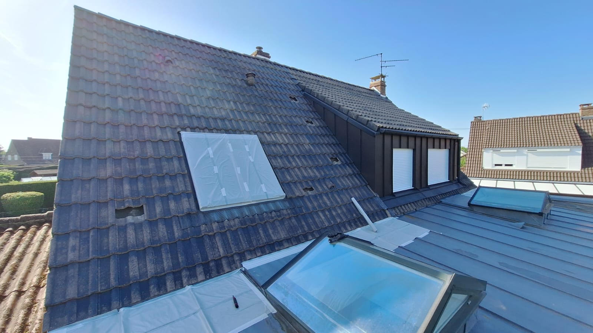
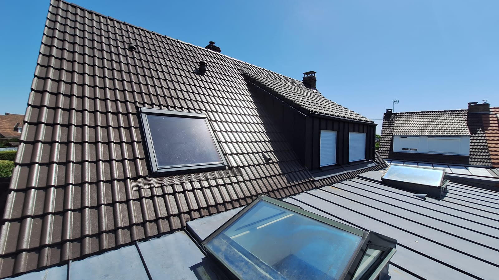

Vous décrivez votre projet
Sept questions simples : la prestation, le type de tuiles, la surface et le délai. Vos coordonnées ne sont demandées qu’à la dernière étape.
≈ 2 minutesDécrivez votre toiture en 2 minutes. Un couvreur qualifié, assuré en décennale, vous rappelle pour convenir d’une visite et d’un devis chiffré.
Quatre étapes, aucune zone d’ombre. Vous savez à l’avance qui appelle et quand.
Sept questions simples : la prestation, le type de tuiles, la surface et le délai. Vos coordonnées ne sont demandées qu’à la dernière étape.
≈ 2 minutesNous contrôlons que le code postal est bien dans le Nord et que le projet relève de la couverture. Une demande hors périmètre n’est transmise à personne.
Le jour mêmeUn seul professionnel — pas trois, pas cinq. Il vous appelle pour comprendre le projet, poser les bonnes questions et fixer un rendez-vous de visite.
Sous 24 à 48 h ouvréesIl monte sur le toit, relève les mesures, photographie les points sensibles et vous remet un devis écrit. Vous décidez ensuite, sans pression.
Sous 3 à 10 jours selon la saisonUne toiture en tuile béton sur la commune de Hazebrouck. Même maison, même angle. Reprotégée et tranquille pendant 15 ans.


L’intégralité des versants est démoussée : mousses, lichens et dépôts sont retirés jusqu’à retrouver la tuile nue. Sans cette étape, tout ce qu’on applique ensuite se pose sur de la saleté et ne tient pas.
Un traitement rémanent est pulvérisé sur l’ensemble de la toiture. Il élimine ce qui subsiste de spores et de racines à l’intérieur même de la porosité de la tuile, invisible à l’œil nu.
La résine est appliquée jusqu’à saturation du support : on charge la tuile tant qu’elle absorbe. Elle referme la porosité et ravive la teinte d’origine.
C’est elle qui laisse entrer l’eau, c’est elle qui nourrit la mousse, et c’est elle que la résine vient combler. Le reste en découle.
Terre cuite ou béton, la couche de surface appliquée en usine s’use avec les années. La tuile se met à boire l’eau au lieu de la laisser glisser. C’est cette porosité, et elle seule, qui permet aux mousses et aux lichens de s’installer : ils y logent leurs racines.
C’est le vrai problème, et il ne se voit pas depuis la rue. Les micro-organismes retiennent l’eau en permanence dans la porosité. Par capillarité, cette humidité traverse la tuile et ressort sur son dos : la tuile est alors bonne à changer. Elle la transmet ensuite aux bois de charpente, qui restent humides et finissent par travailler.
Après nettoyage, la résine est appliquée jusqu’à saturation du support : elle comble la porosité. Contrairement à une peinture, elle est microporeuse — le support continue de respirer et d’évacuer son humidité. Elle fait alors corps avec la tuile et lui rend un effet déperlant : les micro-organismes n’ont plus où s’enraciner, et la pluie suivante les emporte.
Une porosité comblée règle les trois problèmes d’un coup : la tuile n’absorbe plus, elle ne transmet plus rien à la charpente, et elle ne peut plus éclater au gel — puisqu’il n’y a plus d’eau à l’intérieur pour geler.
Trois interventions, trois niveaux de protection. Rien d’autre.
Retrait de la mousse et des lichens, puis traitement anti-mousse rémanent. La toiture retrouve son aspect et ses écoulements.
1 à 2 ans Avant réapparitionNettoyage, traitement, puis application d’une résine de protection qui referme la porosité de la tuile et rétablit l’écoulement de l’eau.
10 ans De garantieDépose complète, pose d’un écran sous-toiture et d’une couverture neuve. La solution quand le support n’est plus récupérable.
30 ans Et plusDes fourchettes honnêtes, pour situer votre budget avant même de nous appeler. Personne ne peut chiffrer un toit sans l’avoir vu.
| Prestation | Prix indicatif au m² | Durabilité |
|---|---|---|
| Nettoyage / Démoussage | 20 à 30 € | 1 à 2 ans |
| Reprotection de toitureLe meilleur rapport durée / prix | 80 à 120 € | garantie 10 ans |
| Couverture neuve | 190 à 280 € | 30 ans et plus |
Fourchettes indicatives, variables selon l’état du support, l’accessibilité, la pente et l’exposition. Le prix définitif est établi après visite gratuite.
Un simple démoussage retire la mousse mais laisse la tuile poreuse : elle revient en une à deux saisons. La reprotection referme cette porosité et protège durablement le support. Son coût reste très inférieur à celui d’une couverture neuve.
Cinq signes qu’un couvreur repère depuis le sol. Si l’un d’eux vous parle, un passage vaut mieux qu’une saison d’attente.
La mousse ne se contente pas d’enlaidir : elle retient l’eau contre la tuile en permanence. Au premier gel, cette eau gèle dans la porosité et fait éclater la surface — c’est le phénomène gélif. Sur les tuiles béton des maisons des années 1960 à 1980, très répandues ici, c’est le premier facteur d’usure.
Une tuile gélive ne se rattrape pas : elle se remplace.Dans le Nord, les rafales d’ouest attaquent toujours les mêmes points : la rive, le faîtage et les deux premiers rangs sous l’égout. Une tuile qui a bougé de trois centimètres ne se voit presque pas depuis la rue, mais elle laisse le liteau et l’écran sous-toiture à découvert.
Le bois mouillé à répétition ne sèche jamais complètement.Une trace qui sèche entre deux pluies puis réapparaît à chaque épisode venteux : c’est le scénario classique. L’entrée d’eau se situe presque toujours plus haut que la tache, parfois à plusieurs mètres — l’eau suit un chevron avant de tomber.
Plus on attend, plus la zone de bois touchée s’étend.Sur une toiture en tuiles béton, un dépôt granuleux au pied de la descente d’eau signale que la couche de surface part. La tuile devient poreuse, absorbe l’eau, s’alourdit et gèle plus vite. C’est le signal qu’une reprotection se joue à quelques saisons près.
Traité à temps : reprotection. Trop tard : couverture neuve.La teinte d’origine s’efface par plaques, la surface devient mate et rugueuse au toucher. C’est l’usure de la couche protectrice appliquée en usine. Une fois qu’elle a disparu, la tuile boit l’eau à chaque pluie et son vieillissement s’accélère nettement.
Le support est encore sain : c’est le bon moment.Depuis 2012, nous ne travaillons que dans le département du Nord (59). C’est ce qui permet à un technicien d’être chez vous rapidement — et de connaître les tuiles de votre secteur avant même d’être monté sur le toit.
Nos chantiers dans le département
Répartition indicative. Nous intervenons dans les huit secteurs du Nord : métropole lilloise, Pévèle, Douaisis, Valenciennois, Flandre intérieure, Dunkerquois, Cambrésis et Avesnois.
le Nord
Nous intervenons dans le Nord et dans les communes environnantes. Le technicien se déplace depuis son secteur habituel : c’est ce qui permet un rappel rapide et une visite sans frais de déplacement facturés.
Votre commune n’apparaît pas ? Tant que le code postal commence par 59, la demande est traitée.
Avis publiés sur la fiche Google du professionnel, sans sélection ni retouche.
Les réponses honnêtes, y compris celles qui ne nous arrangent pas.
Oui, la demande, la visite et le devis sont gratuits, et vous n’avez rien à payer au site. Le modèle est simple et nous préférons l’écrire noir sur blanc : le professionnel partenaire nous rémunère pour la mise en relation. Cela ne change rien au prix de votre chantier, qui est fixé par lui, sur son devis, après visite.
Un technicien de l’entreprise partenaire qui couvre votre secteur. Pas un centre d’appels, pas un standard anonyme, pas un numéro masqué. Un seul interlocuteur, identifié.
Non. Un seul technicien vous contacte. C’est l’inverse des plateformes qui promettent « 3 devis en 24 h » : sur celles-ci, votre numéro part chez plusieurs entreprises à la fois, ce qui explique la salve d’appels qui suit.
Si l’échange ne vous convient pas, vous n’avez rien de plus à faire. Vous pouvez aussi demander la suppression de vos données à tout moment.
Sous 24 à 48 heures ouvrées. Une demande déposée le vendredi soir est donc traitée en début de semaine suivante. Si vous ne décrochez pas, un message est laissé.
En cas de fuite active, n’attendez pas : appelez le 07 86 50 55 80 et posez une bassine sous l’écoulement en attendant.
Le département du Nord (59), et uniquement lui : métropole lilloise, Pévèle, Douaisis, Valenciennois, Flandre intérieure, Dunkerquois, Cambrésis et Avesnois. Si votre code postal ne commence pas par 59, le formulaire vous le dit immédiatement et ne vous demande pas vos coordonnées.
Elles servent uniquement à cette mise en relation et sont transmises au professionnel qui vous contacte. Elles sont conservées trois ans à compter du dernier contact, puis supprimées.
Vous pouvez à tout moment demander à les consulter, les corriger ou les faire effacer, et retirer votre consentement, en écrivant à l’adresse indiquée dans la politique de confidentialité.
Le démoussage retire la mousse et les lichens. C’est nécessaire, mais la tuile reste poreuse : elle continue d’absorber l’eau, et la mousse réapparaît généralement en une à deux saisons.
La reprotection ajoute, après nettoyage et traitement, une résine qui referme cette porosité et rétablit l’écoulement de l’eau. C’est la différence entre nettoyer et protéger.
Deux minutes maintenant, un appel sous 24 à 48 h, un devis écrit après visite gratuite. Intervention dans le Nord.